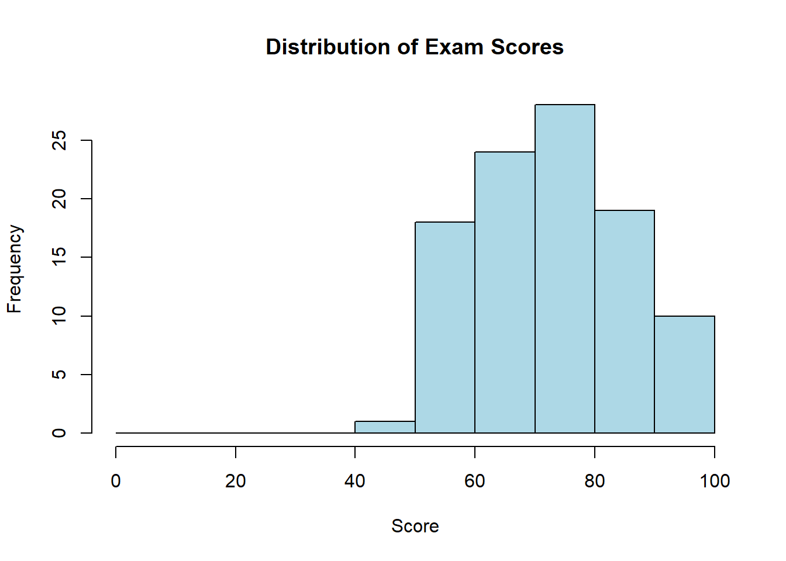

1Introduction to Statistics and Data Analysis for Political Science
1.1 What Is Statistics?
Statistics provides a principled way to learn from data when outcomes vary and information is incomplete.
It covers: (1) description—clear summaries and visualizations; (2) inference—estimating unknown population quantities with uncertainty; and (3) prediction/decision—forecasting and choosing actions under risk.
In empirical political science, this includes: (i) estimating the magnitude of the incumbency advantage; (ii) assessing how events, reforms, or campaigns affect turnout; and (iii) translating poll results into probability distributions or intervals for vote shares.
Note
What statistics helps you do - Describe: tidy summaries and graphics
- Infer: estimate population quantities + uncertainty (SEs, CIs)
- Predict & decide: forecast outcomes and support decisions under risk
1.2 Randomness: a foundation of statistical inference
What is randomness?
In statistics, randomness is an orderly way to describe uncertainty: individual outcomes are unpredictable, yet in long sequences of repetitions stable regularities emerge (e.g., frequencies, means).
Two perspectives
Single realisation — we cannot determine how a specific voter will vote at a given moment.
Aggregate — we can describe the share of voters supporting a party and quantify the associated estimation uncertainty.
Note
Epistemic vs. ontological randomness
Epistemic (due to incomplete knowledge): we treat an outcome as random because not all determinants are observed or conditions are not controlled.
Examples:
the decision of an individual respondent in a poll (we do not know the full set of motivations),
measurement error in a survey (limited precision, item nonresponse),
a coin toss modeled as random because minute, unobserved differences in initial conditions determine the outcome.
Ontological (intrinsic indeterminacy): even complete knowledge does not remove outcome uncertainty.
Examples:
the time to radioactive decay of an atom.
Why Randomness Matters
Random sampling
Reduces systematic selection bias so the sample resembles the target population (in expectation).
Makes uncertainty quantifiable (e.g., margins of error; later we’ll name these “confidence intervals”), assuming genuinely random selection and good coverage.
Random assignment (experiments)
Breaks the link between treatment and other factors, making groups comparable on average (both observed and unobserved).
Supports credible cause-and-effect claims (identifies average treatment effects under standard conditions).
The Power of Random Sampling (quick demo)
Suppose we take a random sample of n=1000 voters and observe \hat p = 0.55 (i.e., 55% support). Then:
Our best single-number estimate of the population share is \hat p = 0.55.
A typical “95\% range of plausible values” around \hat p can be approximated by
\hat p \;\pm\; 2\sqrt{\frac{\hat p(1-\hat p)}{n}}
\;=\;
0.55 \;\pm\; 2\sqrt{\frac{0.55\cdot 0.45}{1000}}
\approx
0.55 \pm 0.031,
i.e., roughly 52\%\text{–}58\% (about \pm 3.1 percentage points).
The width of this range shrinks predictably with sample size:
\text{width} \;\propto\; \frac{1}{\sqrt{n}}.
For example, increasing n from 1000 to 4000 cuts the range by about half.
Note
How to read the “95% range”
Imagine repeating the same random survey many times. In about 19 out of 20 such surveys, the computed range would include the true population percentage.
This rule-of-thumb assumes random sampling from the target population and similar survey conditions.
Non-sampling issues (nonresponse, coverage, measurement) or complex designs (e.g., clustering) can make the real uncertainty larger.
Law of Large Numbers (LLN) — elementary statement
Let A denote an event of interest (e.g., “a vote for party X”, “sum of dice equals 7”). If P(A)=p and we observe nindependent trials with the same distribution (often called i.i.d.), then the sample frequency of A:
\hat{p}_n=\frac{\text{number of occurrences of }A}{n}
converges to p as n increases.
Example (two dice): the event “sum = 7” has probability 6/36 \approx 16.7\%, while “sum = 4” has 3/36 \approx 8.3\%. Over many throws, a sum of 7 appears about twice as often as a sum of 4.
Example (election poll): if the population support for a party equals p, then under random sampling of size n the observed frequency \hat p_n will, as n grows, approach p (assuming random sampling and independence of trials).
# Self-contained demo (no external packages beyond ggplot2)set.seed(42)# Create a synthetic "population" with a known proportionpopulation_support <-c(rep("A", 5200), rep("B", 4800))true_support_A <-mean(population_support =="A")# Function: take a simple random sample and compute support for Asample_support <-function(n) {mean(sample(population_support, n) =="A")}# Sample sizes and repeated drawssample_sizes <-c(50, 100, 500, 1000)results_list <-lapply(sample_sizes, function(n) { est <-replicate(100, sample_support(n))data.frame(sample_size =factor(n), estimate = est, true_value = true_support_A)})results <-do.call(rbind, results_list)library(ggplot2)ggplot(results, aes(x = sample_size, y = estimate)) +geom_boxplot(alpha =0.7, fill ="lightblue") +geom_hline(yintercept = true_support_A, color ="red", linetype ="dashed", linewidth =0.8) +labs(title ="Random Sampling Converges to the Truth as n Increases",subtitle ="Red dashed line = true population value (52%)",x ="Sample size",y ="Estimated support for A",caption ="Each box summarizes 100 random samples" ) +scale_y_continuous(labels = scales::percent_format())
Tip
Reading the figure. Boxes show the middle 50% of estimates; the line is the median. As n grows, the boxes narrow: variability from randomness shrinks, and estimates settle near the true value.
Bottom line: Randomness underpins statistical inference: it turns uncertainty in individual outcomes into predictable distributions for estimates. The Law of Large Numbers (LLN) guarantees that the “noise” of individual outcomes averages out, allowing us to predict long-run frequencies, quantify error, and draw reliable inferences—in surveys, experiments, and, in the frequentist sense, even in quantum phenomena.
Randomness, chaos, entropy, and “haphazardness” (at a glance)
Concept
What is it?
Source of unpredictability
Example
Randomness
Individual outcomes are uncertain, but the probability distribution is known or modeled.
Fluctuations across realizations; lack of information about a specific outcome.
Dice roll, coin toss
Chaos
Deterministic dynamics highly sensitive to initial conditions (butterfly effect).
Tiny initial differences grow rapidly → large trajectory divergences.
Weather, double pendulum, logistic map
Entropy
A measure of uncertainty/dispersion (information-theoretic or thermodynamic).
Larger when outcomes are more even (less predictive information).
Shannon entropy
“Haphazardness” (colloquial)
A felt lack of order without an explicit model; a mixture of mechanisms.
No structured description or stable rules; overlapping processes.
A messy desk
Quantum randomness
A single outcome is not determined; only the distribution is specified (Born rule).
Fundamental (ontological) indeterminacy of individual measurements.
Electron spin, photon polarization
Note: Deterministic chaos ≠ randomness. A chaotic system is fully deterministic yet practically unpredictable due to extreme sensitivity to initial conditions. Randomness, by contrast, models uncertainty via probability distributions.
And quantum mechanics?
In the Copenhagen view, randomness is fundamental (ontological): a single outcome cannot be predicted, but the probability distribution is given by the Born rule,
P(\text{outcome}) \propto \lvert \psi \rvert^{2}.
1.3 Inferential Statistics: An Introductory Example
Note
Fundamental Principle: Statistics does not eliminate uncertainty—it helps us measure, manage, and communicate it effectively.
Historical Example: The 1936 Literary Digest Poll
The Literary Digest conducted one of the largest polls in history with 2.4 million responses, predicting Alf Landon would defeat Franklin D. Roosevelt in the 1936 presidential election. Despite the massive sample size:
Prediction: Landon 57%, Roosevelt 43%
Actual Result: Roosevelt 62%, Landon 38%
What went wrong? The poll suffered from selection bias:
Sampling frame: telephone directories, automobile registrations, club memberships
In 1936, these sources overrepresented wealthy Americans who favored Landon
Non-response bias: only 24% responded, likely those with strong anti-Roosevelt views
Key Lesson: A large biased sample is worse than a small representative sample. Standard errors only measure random error, not bias.
Research Question: What proportion of students support keeping the library open 24/7?
The Challenge: - Population: 20,000 students at the university - Practical constraint: Can only survey 100 students - Problem: Different samples will yield different results
Without Statistical Thinking: “60 out of 100 students said yes, therefore 60% support it.”
With Statistical Thinking: “We estimate 60% support with a margin of error of ±10%. We can be reasonably confident the true support lies between 50% and 70%.”
1.4 Core Concepts
1. The Point Estimate
When 60 out of 100 surveyed students support a proposal:
\hat{p} = \frac{60}{100} = 0.60
This point estimate represents our best single estimate of the population proportion based on the sample.
2. Quantifying Uncertainty
The precision of our estimate depends on sample size: - Smaller samples → greater uncertainty - Larger samples → less uncertainty
Approximation for margin of error:\frac{1}{\sqrt{n}}
Note
Margin of error is the plus–minus amount around a survey estimate that shows how far it might be from the population’s true value solely because we used a sample.
If a poll reports 52% support with a margin of error ±3% (95% confidence), read it as: “Given ordinary sampling variation, the true support is probably somewhere between 49% and 55%.”
What it does and doesn’t mean
✅ It reflects typical differences between samples you’d get if you repeated the same survey many times.
❌ It does not fix problems like biased questions, bad sampling frames, nonresponse, or faulty measurements. Those are errors beyond margin of error.
What controls the margin of error (intuitively)
Sample size: Bigger samples → smaller margin of error. (But with diminishing returns: you need 4× the sample to cut the margin of error in half.)
How mixed the opinions are: Results near 50–50 have a larger margin of error than results near 90–10.
Survey design/weighting: Complex designs and heavy weighting usually increase the effective margin of error.
One-liner for students:Margin of error tells you how far off a survey result might be from the truth in the whole population, purely because you asked a sample instead of everyone.
1.5 The Relationship Between Sample Size and Precision
Tip
Standard Margins of Error
Sample Size
Approximate Margin of Error
n = 100
± 10%
n = 400
± 5%
n = 1,000
± 3%
n = 2,500
± 2%
n = 10,000
± 1%
Key Pattern: To reduce the margin of error by half, the sample size must increase by a factor of four.
1.6 Three Illustrative Examples
Example 1: Small Sample (n = 25)
Survey results: 15 out of 25 support
Point estimate: 60%
Approximate margin of error: ± 20%
Interpretation: True support likely between 40% and 80%—substantial uncertainty
Example 2: Moderate Sample (n = 100)
Survey results: 60 out of 100 support
Point estimate: 60%
Approximate margin of error: ± 10%
Interpretation: True support likely between 50% and 70%—moderate precision
Example 3: Large Sample (n = 1,000)
Survey results: 600 out of 1,000 support
Point estimate: 60%
Approximate margin of error: ± 3%
Interpretation: True support likely between 57% and 63%—high precision
1.7 Understanding Confidence Levels
What “95% Confidence” Means
Consider repeating the same survey procedure 100 times with different random samples:
Each survey produces a different estimate (e.g., a proportion $p$ or a mean $x$), so the center of the interval changes from sample to sample. You report the interval as
So, bigger samples $(n )$ → smaller $SE$ → smaller $$ → a narrower CI; aiming for higher confidence (e.g., 99% vs 95%) uses a larger multiplier than 2, which widens the CI.
Roughly 95 of those 100 intervals built as $ $ would contain the true population value. About 5 would miss purely by chance.
Important: “95% confidence” describes how the procedure (estimate ± MoE) performs if you could repeat the same sampling process many times. If you built an interval each time, about 95% of those intervals would cover the fixed, unknown population value, and about 5% would miss simply due to sampling noise. Once you have this one interval (e.g., 50% ± 3% → 47% to 53%), there is no new randomness in the interval itself—the true value is a single constant, and the interval either covers it or it doesn’t. The 95% figure is therefore a statement about the reliability of the method that produced the interval, not a probability attached to this specific interval.
1.8 Visualizing Sampling Variability
library(ggplot2)set.seed(42)# Parametersn_polls <-20n_people <-100true_support <-0.50# Simulate independent polls (binomial counts -> proportions)support <-rbinom(n_polls, n_people, true_support) / n_people# Per-poll standard error for a proportion (plug-in using that poll's estimate)se <-sqrt(support * (1- support) / n_people)# "95%" margin of error ≈ 2 × SE (plain-English multiplier, no distribution jargon)moe <-2* se# Clamp intervals to [0, 1] to avoid plotting outside the parameter spacelower <-pmax(0, support - moe)upper <-pmin(1, support + moe)# Does the interval cover the true value?covers <- (lower <= true_support) & (upper >= true_support)n_cover <-sum(covers)n_miss <- n_polls - n_coverresults <-data.frame(poll =seq_len(n_polls), support, se, moe, lower, upper, covers)# Plotggplot(results, aes(x = poll, y = support, color = covers)) +geom_errorbar(aes(ymin = lower, ymax = upper), width =0.3, alpha =0.8) +geom_point(size =3) +geom_hline(yintercept = true_support, linetype ="dashed") +scale_color_manual(values =c("TRUE"="forestgreen", "FALSE"="darkorange"),labels =c("TRUE"="Covers truth", "FALSE"="Misses truth"),name =NULL ) +coord_cartesian(ylim =c(0, 1)) +labs(title ="Sampling Variability in 20 Independent Polls",subtitle =paste0("Each poll surveys ", n_people, " different people. Truth = ", scales::percent(true_support),". Intervals covering truth: ", n_cover, "/", n_polls," (", round(100* n_cover / n_polls), "%)." ),x ="Poll Number",y ="Estimated Proportion" ) +theme_minimal(base_size =13) +theme(legend.position ="top")

Key observation: Each sample yields a different result, but most estimates—and their intervals—cluster around the true value; a few “miss” purely due to the randomness of sampling.
1.9 Two Types of Error
Random Sampling Error
Random error (sampling variability): decreases with larger n (narrower intervals).
Results from the natural variability in random sampling
Quantifiable through statistical theory
Decreases with larger sample sizes
Addressed through increased sample size
Systematic Bias
Bias (systematic error): arises from design problems (frame coverage, nonresponse, poor randomization, measurement error). Increasing n does not reduce bias.
Results from flaws in study design or implementation
Not easily quantifiable through standard formulas
Does not decrease with larger sample sizes
Addressed through improved study design
Warning
Critical Point: A large biased sample provides a precisely wrong answer. A small unbiased sample is preferable to a large biased one.
A narrow interval around a biased estimator is precisely wrong. Address bias with better design; address random error with larger n.
1.10 Sources of Bias in Practice
Common Types of Bias
Selection Bias: Sample not representative of population
Example: Online polls that only reach internet users
Nonresponse Bias: Systematic differences between responders and non-responders
Example: Busy people less likely to complete long surveys
Measurement Bias: Questions or procedures that systematically distort responses
Example: Leading questions that suggest a preferred answer
Coverage Bias: Sampling frame excludes part of population
Example: Phone surveys missing households without landlines
1.11 Interpreting Published Poll Results
Reading a Poll Report
When encountering: “52% of registered voters support the initiative (margin of error ± 3%, n = 1,000)”
Extract the following information: 1. Point estimate: 52% 2. Confidence interval: 49% to 55% 3. Sample size: 1,000 (indicates moderate precision)
Critical questions to ask: - How was the sample selected? - What was the response rate? - How were questions worded? - When was the survey conducted?
1.12 Summary
Key Concepts
Estimation from Samples - Point estimate: Our best single estimate from the sample - Margin of error: Quantifies uncertainty due to sampling
Sample Size and Precision - Uncertainty approximately proportional to 1/√n - Quadrupling sample size halves the margin of error
Random Error vs. Systematic Bias - Random error: Quantifiable, decreases with n - Systematic bias: Not easily quantified, persists regardless of n
Transparent Reporting - Always report: estimate, uncertainty, sample size, and methodology - Acknowledge limitations and potential sources of bias
1.13 Mathematical Foundation
Tip
Technical Details
The margin of error for a proportion derives from probability theory:
\text{Margin of Error} = z_{\alpha/2} \times \sqrt{\frac{p(1-p)}{n}}
Where:
p = true population proportion
n = sample size
z_{\alpha/2} = critical value (1.96 for 95% confidence)
Since p(1-p) achieves its maximum of 0.25 when p = 0.5:
\text{Maximum Margin of Error} = 1.96 \times \sqrt{\frac{0.25}{n}} \approx \frac{1}{\sqrt{n}}
This yields the approximation used throughout these notes.
1.14 Quick Reference
Estimating Proportions: Essential Formulas
Point Estimate:\hat{p} = \frac{\text{number of successes}}{\text{sample size}}
Approximate Margin of Error:\text{MoE} \approx \frac{1}{\sqrt{n}}
Interpretation Template:
“We estimate [X%] with a margin of error of [±Y%] based on a sample of [n] observations.”
Essential Caveats:
Assumes random sampling
Bias cannot be reduced by increasing sample size
Always report methodology and limitations
1.15 The Statistical Mindset
1) Acknowledge uncertainty
Most population quantities are not known exactly. Treat every numerical result as an estimate accompanied by uncertainty.
Example: “Estimated support is 52% (95% CI: 49%–55%), based on a random sample of 1,200 adults.”
2) Reason about variation
Differences across people, places, or time enable learning. Distinguish random variation (sampling variability) from systematic variation (institutions, demographics, incentives).
Example: Turnout differences can reflect weather noise (random) and ballot complexity (systematic).
3) Compare fairly (association vs. causation)
Two variables can move together (association) without one producing the other (causation). Causal claims require a fair comparison: what would have happened for the same units under a different condition, holding other factors constant (the counterfactual).
Example: Municipalities with more campaign visits often show higher turnout. Competitiveness may raise both visits and turnout. A valid design (randomization, natural experiment, regression discontinuity, etc.) is needed to argue that visits cause higher turnout.
Caution
Before making a causal claim
Is the comparison well defined and credible?
Could a third factor influence both variables (a confounder), and how is it addressed (by design or analysis)?
Are assumptions stated clearly and checked where possible?
4) Check reliability
Apparent regularities can arise from sampling variability or modeling choices. Use standard errors, interval estimates, and replication to judge stability. Prefer effect sizes with intervals over binary “significant/not significant” labels.
Example: “Turnout increased by 2.3 percentage points (95% CI: 0.8 to 3.8).”
5) Consider alternative explanations
For each claim, list plausible alternatives and test them (robustness checks, placebo tests, falsification exercises).
Example: If study-group participation correlates with higher grades, evaluate selection: students with higher prior achievement or motivation may self-select into groups.
1.16 A Simple Workflow of Statistical Analysis
Research question – what do you want to estimate (estimand)?
Study design – how will you obtain a credible comparison?
Data collection – procedures, sampling, measurement quality.
Exploratory Data Analysis (EDA) – initial patterns, cleaning, visualizations.
Modeling – description, prediction, or causal inference.
Conclusions and communication – effect with a confidence/credible interval, limitations.
1.17 Essential Vocabulary
Population: the full set you want to learn about (e.g., all eligible voters).
Sample: the part you actually observe (e.g., 1,200 surveyed voters).
Parameter: a fixed but unknown population quantity (e.g., true support).
Statistic: a number computed from the sample (e.g., sample mean).
Estimate: your best guess of a parameter using data (e.g., \hat{p}).
Standard error (SE): the estimated variability of an estimate across repeated samples.
Confidence interval (CI): a range that, under repeated sampling, would contain the parameter a specified proportion of the time (e.g., 95%).
Causal effect: the change in an outcome if the input were changed for the same unit.
Confounder: a variable that affects both the input and the outcome, creating a misleading association.
1.18 Population, Sample, and Superpopulation (DGP): Foundations of Inference
In political science, we’re often interested in understanding entire populations—the complete set of units we want to study. However, studying entire populations is usually impossible, impractical, or unnecessary. Statistics lets us learn about populations using samples.
What Counts as a Population?
A population in political science can consist of various types of units:
Individuals
Population: All 240 million American adults
Sample: 1,000 randomly selected adults in a survey
Research question: What percentage support universal healthcare?
Countries
Population: All 195 sovereign nations in the world
Sample: 50 countries from different regions and development levels
Research question: Does democracy correlate with economic growth?
Subnational Units
Population: All 3,143 U.S. counties
Sample: 200 randomly selected counties
Research question: How does unemployment affect crime rates?
Organizations
Population: All NGOs registered with the United Nations
Sample: 100 NGOs working in different policy areas
Research question: What factors predict NGO effectiveness?
Events or Time Periods
Population: All elections held in Europe since 1945
Sample: 300 elections from different countries and decades
Research question: How do economic conditions affect incumbent vote share?
Legislative Units
Population: All bills introduced in Congress from 2000–2020
Sample: 500 randomly selected bills
Research question: What predicts whether a bill becomes law?
From Sample to Population (Inference)
A sample is a subset of the population we actually observe and measure. The key insight of statistics is that we can learn about populations by studying samples—if we’re careful about how we choose them.
From our sample, we want to make inferences about the population:
For example, if 52% of our sample supports Candidate A (\hat{p} = 0.52), what can we say about support in the entire population (\pi)?
The fundamental principle: random selection gives every unit in the population an equal chance of being included, preventing systematic bias.
Note
Mini-glossary (plain language)
Parameter: a true population quantity (e.g., mean \mu).
Statistic: a number computed from a sample (e.g., sample mean \bar{x}).
Estimator: the rule for computing a statistic (e.g., “take the average”).
Visualizing Sampling
Let’s see how different sample sizes affect our estimates:
set.seed(42)# Population and experiment parameterspopulation_size <-1000000true_proportion <-0.60# True population parameter (π)sample_sizes <-c(100, 500, 1000, 5000)n_trials <-20# independent samples per n# Simulation (vectorized)grid <-expand.grid(size = sample_sizes, trial =seq_len(n_trials))grid$estimate <-rbinom(nrow(grid), size = grid$size, prob = true_proportion) / grid$size# Expected "uncertainty band" ± 2 × SE for each n (using the true π in this simulation)se_exp <-sqrt(true_proportion * (1- true_proportion) / sample_sizes)ribbons <-data.frame(size = sample_sizes,lower =pmax(0, true_proportion -2* se_exp),upper =pmin(1, true_proportion +2* se_exp))# Plotggplot(grid, aes(x =factor(size), y = estimate)) +# Gray band: approximate ± 2 × SE for each sample sizegeom_crossbar(data =transform(ribbons, x =factor(size)),aes(x = x, y = true_proportion, ymin = lower, ymax = upper),inherit.aes =FALSE,fill ="grey85", alpha =0.7, width =0.6, color =NA ) +# Points: independent estimates from simulated samplesgeom_point(position =position_jitter(width =0.12, height =0),alpha =0.75, size =2.2, color ="steelblue") +# Red dashed line: true population valuegeom_hline(yintercept = true_proportion, linetype ="dashed", color ="red") +labs(title ="How Sample Size Affects the Spread of Estimates",subtitle ="Gray bands show an approximate ± 2 × SE around 60% for each n; larger n → narrower bands",x ="Sample size (n)",y ="Sample estimate",caption =paste0("Replicates per sample size: ", n_trials,"; π = ", scales::percent(true_proportion)) ) +scale_y_continuous(labels = scales::percent_format(accuracy =1)) +coord_cartesian(ylim =c(0.45, 0.75)) +theme_minimal(base_size =13)
Note on the chart: Each blue dot is one estimate from an independent sample. For each column, the gray band shows an approximate ± 2 × SE (about the half-width of a typical interval). As n grows, the band narrows and the estimates cluster more tightly around the red dashed line (the true value).
Key takeaway: Larger nreduces random error (narrower range of typical fluctuations). With n=100 the spread can be wide (e.g., ~55–65%), while with n=5000 estimates are much closer to the truth (e.g., ~59–61%). That’s why nationwide polls often target n \approx 1{,}000+ rather than n=100.
The Representation Problem
Not all samples are created equal. Consider these sampling methods:
Convenience Sample: Surveying students in your political science class
Problem: Not representative of all voters
Example: College students skew younger and more liberal than the general population
Voluntary Response Sample: Online poll on a news website
Problem: Self-selection bias
Example: People with strong opinions are more likely to participate
Random Sample: Each unit has equal probability of selection
Solution: Best chance of representative sample
Example: Randomly selected phone numbers from all area codes
Stratified Random Sample: Divide population into groups, sample from each
Advantage: Ensures representation of key subgroups
Example: Sample equal numbers from each state for national survey
Cluster Sample: Randomly select groups, then survey everyone within
Advantage: Cost-effective for geographically dispersed populations
Example: Randomly select 50 cities, then survey residents within those cities
Basic Definitions
Population
A population is the full set of units we study. A unit can be a person, household, firm, organization, municipality, county/region, state/country, or an event (e.g., a vote, a law, a transaction).
Examples
All municipalities in Poland (e.g., in 2024)
All countries in the world in 2024
All registered voters in Canada
All transactions on the NYSE in 2024
All laws passed in a given period
Key idea: At a given moment, the population is finite and fixed. It has true quantities we would like to know (e.g., the mean \mu and standard deviation \sigma), even if we do not know them yet.
Sample
A sample is the subset of the population that we actually observe.
Examples
1,000 randomly selected voters
200 measured trees
10,000 analyzed transactions
300 surveyed students
250 municipalities randomly drawn from all municipalities
Why samples create uncertainty
If we draw a different sample (different people/municipalities/events), results change a bit.
Therefore, statistics (like ${x}$) differ from sample to sample.
We use these differences between samples to report how confident we can be about the population.
POPULATION (exists, but not fully known)
↓
[Sampling / data collection]
↓
SAMPLE (what we see)
↓
[Inference that accounts for uncertainty]
↓
ESTIMATES about the population
Tip
Thought experiment. Run the same survey 1,000 times with new random participants each time. You get 1,000 slightly different means. Their spread is the typical difference between samples.
A short simulation for intuition:
set.seed(1)# Suppose the true share supporting a policy in the population is p = 0.60.p_true <-0.60n <-1000# sample size per surveyR <-2000# number of repeated surveys# Repeat the survey R times:p_hats <-rbinom(R, size = n, prob = p_true) / n# Typical difference between samples (later: standard error):sd(p_hats)
[1] 0.01579959
# An approximate central range across many repeats (~95%):quantile(p_hats, c(0.025, 0.975))
2.5% 97.5%
0.568 0.631
Takeaway: Even if conditions do not change, repeated samples give slightly different results. These differences between samples are the uncertainty we should report.
When We Observe Everyone (Census, Full Administrative Data)
Sometimes we observe the entire population in a given year:
A national census
All stock trades in 2024
All hospital admissions in 2023
All municipalities in Poland with their features in 2024
Question: If we computed the true mean for 2024, why talk about uncertainty?
Answer: We usually care about the process, not only one year.
Another year may differ. 2024 is just one possible configuration; 2025 may look different.
Measurement is imperfect. Even full data can have missing values or errors.
We want generalization. We ask “what typically happens?” or “what if conditions change?”
So even with “all of 2024,” intervals can express uncertainty about the process that produces future data.
Superpopulation (Data Generating Process)
The superpopulation or Data Generating Process (DGP) is a conceptual source of data: an ongoing mechanism that could have produced slightly different outcomes—and will produce new data in future years.
Instead of only:
Population → Sample
we often think:
SUPERPOPULATION (process)
↓
[Data-generating mechanism]
↓
OBSERVED POPULATION (specific year / conditions)
↓
INSIGHTS about the process (generalization, prediction, explanation)
Examples
Annual sales
What we observe: all 50,000 transactions in 2024
Process: under slightly different demand/prices/promotions, results would differ
Why: understand the process to say something about 2025
Elections
What we observe: turnout for all municipalities in 2024
Example: If 52% of our sample (\hat{p} = 0.52) supports a candidate, we use this statistic to estimate the population parameter (\pi) representing true support among all voters.
Estimates and Estimators
An estimator is the method or formula used to approximate a parameter. An estimate is the specific numerical result from applying that estimator to a particular sample.
Estimator: The sample mean \bar{x} = \frac{\sum x_i}{n}
Estimate: \bar{x} = 6.3 years of education (the actual number from our data)
The Soup Analogy: Understanding Statistical Inference
Imagine you’re a chef making a large pot of soup for 100 people. You want to know if the soup has the right amount of salt, but you can’t taste all of it. Instead, you take a small spoonful to taste.
The Population: The entire pot of soup (100 servings)
The Sample: Your spoonful
The Parameter: The true saltiness of the entire pot (unknown)
The Statistic: The saltiness of your spoonful (what you can measure)
Statistical Inference: Using the spoonful’s saltiness to draw conclusions about the entire pot
Key Insights from the Soup Analogy:
Random sampling matters: You must stir the soup first and take your spoonful from a random location. If you always sample from the top, you might miss that the salt settled to the bottom.
Sample size affects precision: A bigger spoonful gives you a better sense of the overall saltiness than a tiny sip.
Uncertainty is inherent: Even with good sampling, your spoonful might not perfectly represent the whole pot. There’s always some uncertainty.
Systematic bias ruins everything: If someone secretly added extra salt to just your spoonful, your inference about the whole pot would be wrong. This represents sampling bias.
Inference has limits: You can estimate the average saltiness, but your spoonful can’t tell you if some portions are saltier than others (variability within the population).
This analogy captures the essence of statistical thinking: we use small, carefully selected samples to learn about much larger populations, always acknowledging the uncertainty inherent in this process.
A Real-World Example: What Predicts Electoral Success?
Let’s start with a question that gets to the heart of political science: What makes politicians win elections?
Imagine you’re a campaign manager trying to understand why some incumbents win by landslides while others barely scrape by. You have data on 200 recent congressional elections, including each incumbent’s approval rating, the state of the local economy, and their victory margin.
# Create realistic electoral dataset.seed(42) # Consistent with initial setupn_elections <-200# Generate correlated predictors (realistic scenario)approval_rating <-runif(n_elections, 35, 85)economic_growth <-rnorm(n_elections, 2.5, 1.5)campaign_spending_100k <-rnorm(n_elections, 8, 2) # In units of $100,000 for clarity# Create victory margin with realistic relationshipsvictory_margin <--15+0.6* approval_rating +# Strong approval effect2.5* economic_growth +# Economic voting0.3* campaign_spending_100k +# Money helps (effect per $100k)rnorm(n_elections, 0, 8) # Random factors# Create datasetelection_data <-data.frame(district =1:n_elections,approval = approval_rating,econ_growth = economic_growth,spending_100k = campaign_spending_100k,victory_margin = victory_margin,won = victory_margin >0)# Quick visualizationp1 <-ggplot(election_data, aes(x = approval, y = victory_margin)) +geom_point(alpha =0.6, color ="steelblue") +geom_smooth(method ="lm", se =TRUE, color ="red") +geom_hline(yintercept =0, linetype ="dashed", alpha =0.7) +labs(title ="Approval Rating vs. Victory Margin",x ="Approval Rating (%)",y ="Victory Margin (percentage points)",subtitle ="Points above the dashed line represent wins")print(p1)
# Run the regressionsimple_model <-lm(victory_margin ~ approval, data = election_data)summary(simple_model)
Call:
lm(formula = victory_margin ~ approval, data = election_data)
Residuals:
Min 1Q Median 3Q Max
-21.9948 -6.1420 0.5653 5.9218 28.4974
Coefficients:
Estimate Std. Error t value Pr(>|t|)
(Intercept) -9.78570 2.63382 -3.715 0.000264 ***
approval 0.64728 0.04192 15.439 < 0.0000000000000002 ***
---
Signif. codes: 0 '***' 0.001 '**' 0.01 '*' 0.05 '.' 0.1 ' ' 1
Residual standard error: 8.635 on 198 degrees of freedom
Multiple R-squared: 0.5462, Adjusted R-squared: 0.544
F-statistic: 238.4 on 1 and 198 DF, p-value: < 0.00000000000000022
Figure Note: This scatter plot shows the relationship between approval ratings (x-axis) and electoral victory margins (y-axis). Each point represents one election. The red line shows the “line of best fit” from linear regression, with the gray band indicating uncertainty. Points above the dashed horizontal line (y=0) represent electoral victories.
Reading the Output: The “Estimate” for approval (approximately 0.60) means each 1-point increase in approval rating is associated with a 0.60-point increase in victory margin. The p-value (<0.001) indicates this relationship is statistically significant—very unlikely to be due to chance alone.
What we just discovered: Each 1-point increase in approval rating is associated with about a 0.65-point increase in victory margin. With an approval rating below 15.1%, incumbents typically lose.
However, approval rating represents only one factor in electoral success. A more comprehensive analysis requires examining multiple variables simultaneously:
When we account for multiple factors simultaneously, we see that:
Approval rating remains the strongest predictor (0.6 points per 1% approval)
Economic growth also matters significantly (2.5 points per 1% GDP growth)
Campaign spending has a modest effect (0.3 points per $100,000 spent)
This is the power of regression analysis—it helps us disentangle complex relationships and understand what really matters in politics.
Common Statistical Pitfalls in Political Science
Ecological fallacy: Assuming group-level patterns apply to individuals
Selection bias: Non-random samples that systematically exclude certain groups
Confounding: Failing to account for variables that affect both X and Y
P-hacking: Testing multiple hypotheses until finding significance
Overgeneralization: Extending findings beyond the studied population
The Political World is Full of Data
Political science has evolved from a primarily theoretical discipline to one that increasingly relies on empirical evidence. Whether we’re studying:
Election outcomes: Why do people vote the way they do?
Public opinion: What shapes attitudes toward immigration or climate policy?
International relations: What factors predict conflict between nations?
Policy effectiveness: Did a new education policy actually improve outcomes?
We need systematic ways to analyze data and draw conclusions that go beyond anecdotes and personal impressions.
Consider this question: “Does democracy lead to economic growth?”
Your intuition might suggest yes—democratic countries tend to be wealthier. But is this causation or correlation? Are there exceptions? How confident can we be in our conclusions?
Statistics provides the tools to move from hunches to evidence-based answers, helping us distinguish between what seems true and what actually is true.
1.20 Measurement: Transforming Concepts into Numbers
The Challenge of Measurement in Social Sciences
In social sciences, we often struggle with the fact that key concepts do not translate directly into numbers:
How do we measure “democracy”?
What number captures “political ideology”?
How do we quantify “institutional strength”?
How do we measure “political participation”?
Levels of Measurement
Nominal (categories without order)
Party affiliation: Democratic, Republican, Independent
Country: Poland, Germany, France
Voting choice: Candidate A, Candidate B, Did not vote
Permitted operations: frequency counts, mode, cross-tabulation, chi-square test.
Ordinal (ordered categories)
Education level: elementary < high school < bachelor’s < master’s < doctoral degree
Key characteristic: Distances between categories do not have to be equal. For example, the difference in knowledge between “low” and “medium” levels may be much larger or smaller than the difference between “medium” and “high” levels. We only know that one level is higher than another, but not “by how much.”
Interval (equal intervals, arbitrary zero)
Calendar years: difference between 2020–2021 = difference between 2023–2024
Temperature in °C or °F
Standardized scores based on linear transformation (e.g., z-score, T-score)
Permitted operations: addition, subtraction, arithmetic mean, standard deviation, Pearson correlation, linear regression.
Warning
Limitation: Comparisons like “twice as much” make no sense because the zero point is arbitrary. For example: 20°C is not “twice as warm” as 10°C. If we used the Fahrenheit scale, these same temperatures would be 68°F and 50°F – suddenly one is no longer “twice” the other.
Ratio (equal intervals + true zero)
Number of votes cast (0 = actually zero votes)
Age, income, campaign expenditures
Number of correct answers on a test, percentage of correct answers
Permitted operations: all operations, including ratios (“twice as many votes”).
Special Case: Psychometric Test Results
Type of Score
Level of Measurement
Note
Letter grades (A/B/C), stanines, categories
Ordinal
Only ordering, no equal intervals
Percentiles
Ordinal
Same percentile increase means different change in actual scores
IQ scores
Ordinal
Rank-ordered and transformed to normal distribution
z-score, T-score
Interval*
*Only if original scores truly have equal intervals
Raw number of points, % correct
Ratio
True zero, constant increment
Example of the percentile problem: Moving from the 50th to 60th percentile might mean a change of 2-3 points on a test, while moving from the 90th to 95th percentile might mean a change of 10 points. Percentiles only tell us what percentage of people scored worse, but they don’t tell us about the actual magnitude of differences in abilities.
Reality: IQ is Fundamentally an Ordinal Scale
How IQ scores are created – step by step:
Collecting raw scores: People take a test and receive a number of correct answers (e.g., 45 out of 60 questions)
Ordering: All raw scores are arranged from worst to best
Assigning ranks: Each score is assigned a position in the ranking
Transformation to IQ scale: Ranks are mathematically transformed so that the mean equals 100 and standard deviation equals 15
Key problem: This process forces a normal distribution onto data that may not have been normal in its original form. This means that equal differences in IQ points (e.g., difference between IQ 100 and 115 vs. difference between IQ 115 and 130) may not correspond to equal differences in actual cognitive abilities.
Key Point
IQ 130 does not mean “twice the intelligence” of IQ 65. IQ points only show a person’s position relative to other people in the sample, not the actual amount of intelligence. This is similar to places in a competition – the winner might win by a hair or by miles, but will still be in first place.
In research practice: why do we sometimes treat IQ as an interval scale?
This is a methodological compromise that allows for the use of more precise statistical tools:
✅ Treating IQ as an interval scale is acceptable when: - Using standard statistical tests (correlations, regressions, t-tests) - Comparing groups within the same test and population - Being aware of the limitations of this approach - Our conclusions don’t depend on differences being exactly equal
⚠️ Remember the limitations: - This is a simplification of reality - The assumption works better for scores near the mean (IQ 85-115) than at the extremes - Results must be interpreted carefully
❌ Never: - Say that IQ differences mean equal differences in intelligence - Use statements like “twice as intelligent” - Forget that the normal distribution was imposed, not discovered in the data
Practical Guidelines for Researchers
Be transparent:
Clearly state: “We treat IQ as an interval scale for statistical purposes, remembering that it is fundamentally an ordinal scale”
Consider alternatives:
Use non-parametric tests when sample size allows
Compare results from different analytical methods
Interpret cautiously:
Focus on statements about order (“group A achieved higher scores than group B”)
Avoid precise statements about the magnitude of differences
Remember: a 15-point IQ difference means “one standard deviation in the sample,” not “a specific amount of additional intelligence”
Summary
IQ is an ordinal scale that has been transformed to look like an interval scale. It can be used in statistical analyses requiring an interval scale, but one must always remember its true nature when interpreting results. The key is understanding that IQ points tell us about position in a group, not about the absolute amount of intelligence.
Measurement Error
Any measurement carries error. For a democracy index:
Example: “Don’t you agree taxes are too high?” overstates anti-tax sentiment.
Random Error
Unpredictable fluctuations up and down.
Averages out with larger samples (law of large numbers).
Example: some respondents misread a question; such mistakes lack direction.
Note
Takeaway: Bigger samples reduce random error but cannot fix systematic error—improving the instrument (definitions, items, scaling) is required.
1.21 Statistical Significance: Making Sense of Uncertain Evidence
The Courtroom Analogy for Hypothesis Testing
Statistical hypothesis testing follows a logic analogous to legal proceedings:
Null hypothesis (H_0): The defendant is innocent (no real effect exists)
Alternative hypothesis (H_1): The defendant is guilty (a real effect exists)
Evidence: Our data and statistical test
Verdict: Reject H_0 (find significance) or fail to reject H_0 (no significance)
As in legal proceedings, we require strong evidence to reject the presumption of innocence (no effect). This framework leads to two types of potential errors:
Type I error (false positive): Convicting an innocent person (rejecting H_0 when H_0 is true), controlled by significance level \alpha (typically 0.05)
Type II error (false negative): Acquitting a guilty person (failing to reject H_0 when H_1 is true), with probability \beta and power 1-\beta
What is Statistical Significance?
When we observe a difference in our data, we face a fundamental question: Does this difference reflect a true population characteristic or merely sampling variability?
Statistical significance provides a framework for answering:
Is the observed pattern likely due to a real effect, or could it plausibly arise from random chance alone?
This framework distinguishes between:
Signal: Real patterns reflecting true relationships in the population
Noise: Random variation arising from sampling
The Logic of Hypothesis Testing
The null hypothesis represents our default assumption—typically that no effect or relationship exists:
No difference between groups
No relationship between variables
No treatment effect
We maintain this skeptical stance until the data provide sufficient evidence to reject it.
Understanding p-values: Three Complementary Perspectives
The p-value remains one of the most misunderstood concepts in statistics. Consider three complementary interpretations:
1. The Surprise Metric
The p-value quantifies how surprised we should be to observe our data if nothing systematic were occurring:
Small p-value (< 0.05): Very surprising under the null → Evidence for an effect
Large p-value (> 0.05): Not surprising under the null → Insufficient evidence
2. The Coin Flip Illustration
Consider testing whether a coin is fair. You flip it 10 times and observe 8 heads.
The p-value answers: If the coin were actually fair, how often would we observe 8 or more heads in 10 flips?
Critical clarification: The p-value assumes the null hypothesis is true—it does not provide the probability that the null hypothesis is true.
A Visual Understanding of p-values
# Simulate what happens under the null hypothesisset.seed(789)null_distribution <-rnorm(10000, mean =0, sd =1)# Our observed test statisticobserved <-2.1# Create data frame for visualizationhist_data <-data.frame(values = null_distribution)# Create the visualizationggplot(hist_data, aes(x = values)) +geom_histogram(aes(y = ..density..), bins =50, fill ="lightblue", color ="black", alpha =0.7) +geom_density(color ="darkblue", linewidth =1) +geom_vline(xintercept = observed, color ="red", linewidth =1.5) +geom_vline(xintercept =-observed, color ="red", linewidth =1.5, linetype ="dashed") +geom_area(stat ="function", fun = dnorm, xlim =c(observed, 4), fill ="red", alpha =0.3) +geom_area(stat ="function", fun = dnorm, xlim =c(-4, -observed), fill ="red", alpha =0.3) +labs(title ="What the p-value Measures",subtitle ="Distribution of possible results if the null hypothesis were true",x ="Test Statistic Values",y ="Probability Density") +annotate("text", x =2.5, y =0.15, label ="p-value:\nProbability of\nresults this extreme\nor more extreme", color ="red", fontface ="bold", size =3) +annotate("text", x =0, y =0.2, label ="Most likely\nresults if\nno effect", color ="darkblue", size =3)
The blue distribution represents expected outcomes under the null hypothesis. The red lines mark our observed result, and the red shaded areas show the p-value—the probability of obtaining results at least this extreme by chance alone.
Examples: Understanding p-values in Context
Example 1: Campaign Advertisement Effectiveness
Research Question: Do television advertisements increase candidate vote share?
Design: A candidate runs TV ads in 20 randomly selected cities but not in 20 other similar cities.
# Simulate the campaign ad experimentset.seed(123)# Generate realistic dataad_cities <-c(rep("With Ads", 20), rep("No Ads", 20))vote_share <-c(rnorm(20, 0.58, 0.08), # Cities with ads: mean 58%, SD 8%rnorm(20, 0.54, 0.08) # Cities without ads: mean 54%, SD 8%)campaign_data <-data.frame(treatment =factor(ad_cities, levels =c("No Ads", "With Ads")),vote_share = vote_share)# Calculate the observed differencemean_with_ads <-mean(campaign_data$vote_share[campaign_data$treatment =="With Ads"])mean_no_ads <-mean(campaign_data$vote_share[campaign_data$treatment =="No Ads"])observed_diff <- mean_with_ads - mean_no_ads# Perform t-test (two-sided by default)t_test_result <-t.test(vote_share ~ treatment, data = campaign_data)p_val <- t_test_result$p.value# Create visualizationggplot(campaign_data, aes(x = treatment, y = vote_share, fill = treatment)) +geom_boxplot(alpha =0.7, width =0.5) +geom_jitter(width =0.15, alpha =0.6, size =2.5) +stat_summary(fun = mean, geom ="point", shape =23, size =4, fill ="red", color ="darkred") +labs(title ="Do Campaign Ads Increase Vote Share?",subtitle =paste0("Observed difference: ", round(observed_diff*100, 1), " percentage points, p-value = ", round(p_val, 3)),x ="Treatment Condition",y ="Vote Share (%)",caption ="Red diamonds show group means. Each dot represents one city." ) +scale_y_continuous(labels =function(x) paste0(x*100, "%")) +scale_fill_manual(values =c("No Ads"="#E8E8E8", "With Ads"="#4CAF50")) +theme_minimal() +theme(legend.position ="none")
Interpretation:
The boxes display the middle 50% of cities in each group
Red diamonds indicate group means
Individual dots represent individual cities
If p-value < 0.05, the observed difference is unlikely due to chance alone
Example 2: Weather Effects on Voter Turnout
Research Question: Does rain decrease voter turnout?
Interpretation: If weather had no effect on turnout, there would be only a 0.08% chance of observing a difference this large or larger. This provides strong evidence that weather affects turnout.
Example 3: Non-Significant Results
Research Question: Does time spent on social media predict political knowledge?
# Simulate a case with no meaningful relationshipset.seed(999)n_people <-150# Create data with essentially no relationshipsocial_media_data <-data.frame(social_media_hours =runif(n_people, 0, 8),political_knowledge =rnorm(n_people, 50, 15))# Add tiny, undetectable relationshipsocial_media_data$political_knowledge <- social_media_data$political_knowledge +0.5* social_media_data$social_media_hours +rnorm(n_people, 0, 14)# Fit linear modelsm_model <-lm(political_knowledge ~ social_media_hours, data = social_media_data)sm_summary <-summary(sm_model)sm_coef <-coef(sm_model)[2]sm_p <- sm_summary$coefficients[2, 4]sm_se <- sm_summary$coefficients[2, 2]r_squared <- sm_summary$r.squared# Create scatter plot with regression lineggplot(social_media_data, aes(x = social_media_hours, y = political_knowledge)) +geom_point(alpha =0.5, color ="steelblue") +geom_smooth(method ="lm", se =TRUE, color ="red", fill ="pink", alpha =0.3) +labs(title ="Social Media Use and Political Knowledge",subtitle =paste0("Effect: ", round(sm_coef, 2), " points per hour (SE = ", round(sm_se, 2), "), p = ", round(sm_p, 3),", R² = ", round(r_squared, 3)),x ="Daily Social Media Hours",y ="Political Knowledge Score (0-100)",caption ="Wide confidence band indicates high uncertainty about the relationship" ) +theme_minimal() +annotate("text", x =6, y =20, label ="Not statistically\nsignificant", color ="red", fontface ="bold", size =4)
Critical points about non-significant results:
We cannot conclude there is no relationship
We can only state we lack sufficient evidence for a relationship
Possible explanations for non-significance:
The effect truly does not exist
The effect is too small to detect with our sample size
Measurement error obscures the true relationship
The 0.05 Threshold: Convention, Not Natural Law
The conventional threshold of p < 0.05 for “statistical significance” is merely a historical convention established by Ronald Fisher in the 1920s.
# Create a visual showing the continuous nature of p-valuesp_values <-seq(0.001, 0.2, by =0.001)p_data <-data.frame(p = p_values,significant =ifelse(p_values <0.05, "Significant", "Not Significant"))ggplot(p_data, aes(x = p, y =1, fill = significant)) +geom_tile(aes(height =1)) +geom_vline(xintercept =0.05, color ="black", linewidth =1.5) +scale_fill_manual(values =c("Significant"="#4CAF50", "Not Significant"="#FF6B6B")) +scale_x_continuous(breaks =c(0.001, 0.01, 0.05, 0.1, 0.15, 0.2),labels =c("0.001", "0.01", "0.05", "0.10", "0.15", "0.20")) +labs(title ="The Arbitrary Nature of the 0.05 Threshold",subtitle ="p = 0.049 and p = 0.051 are practically identical, yet conventionally treated differently",x ="p-value",y ="",fill ="Conventional\nInterpretation" ) +theme_minimal() +theme(axis.text.y =element_blank(),axis.ticks.y =element_blank(),panel.grid.major.y =element_blank(),panel.grid.minor.y =element_blank()) +annotate("text", x =0.025, y =1, label ="Strong\nEvidence", color ="white", fontface ="bold") +annotate("text", x =0.125, y =1, label ="Weak\nEvidence", color ="white", fontface ="bold") +annotate("text", x =0.05, y =0.5, label ="Arbitrary\nCutoff", color ="black", fontface ="bold", size =3)
Key Considerations:
Nothing fundamentally changes at p = 0.05
Different fields adopt different thresholds (physics: p ≈ 3 × 10⁻⁷, “5 sigma”)
Modern practice emphasizes reporting exact p-values and effect sizes
The dichotomization into “significant” versus “not significant” can be misleading
Common Misconceptions About p-values
Incorrect Interpretations:
“p = 0.03 means there’s a 97% chance our treatment works”
Error: p-values do not provide the probability that a hypothesis is true
“p = 0.20 means the effect is small”
Error: p-values measure evidence strength, not effect magnitude
“p > 0.05 proves there’s no effect”
Error: Absence of evidence does not constitute evidence of absence
Correct Interpretations:
“p = 0.03 means: If there were no effect, we would observe data this extreme only 3% of the time”
“p = 0.20 means we have weak evidence against the null hypothesis”
“p > 0.05 means we cannot confidently distinguish signal from noise”
Statistical Significance versus Practical Significance
# Demonstrate the difference between statistical and practical significanceset.seed(42)# Small but statistically significant effect (large sample)large_n <-10000group_a_large <-rnorm(large_n, mean =100, sd =15)group_b_large <-rnorm(large_n, mean =100.5, sd =15) # Tiny difference# Large but not statistically significant effect (small sample)small_n <-20group_a_small <-rnorm(small_n, mean =100, sd =15)group_b_small <-rnorm(small_n, mean =105, sd =15) # Large difference# Teststest_large <-t.test(group_a_large, group_b_large)test_small <-t.test(group_a_small, group_b_small)# Create comparison visualizationcomparison_data <-data.frame(Scenario =c("Large Sample\n(n=10,000)", "Small Sample\n(n=20)"),Effect_Size =c(mean(group_b_large) -mean(group_a_large),mean(group_b_small) -mean(group_a_small)),P_Value =c(test_large$p.value, test_small$p.value),Significant =c(test_large$p.value <0.05, test_small$p.value <0.05))ggplot(comparison_data, aes(x = Effect_Size, y =-log10(P_Value))) +geom_point(aes(color = Significant, shape = Scenario), size =8) +geom_hline(yintercept =-log10(0.05), linetype ="dashed", color ="red") +geom_text(aes(label = Scenario), vjust =-1.5, size =3) +scale_color_manual(values =c("FALSE"="gray60", "TRUE"="darkgreen")) +labs(title ="Statistical versus Practical Significance",subtitle ="Large samples detect tiny effects; small samples may miss large effects",x ="Effect Size (Difference in Means)",y ="Statistical Significance\n(-log10 p-value)",caption ="Points above red line are statistically significant (p < 0.05)" ) +theme_minimal() +annotate("text", x =0.5, y =-log10(0.05), label ="p = 0.05", color ="red", size =3) +theme(legend.position ="bottom")
Comparison Results:
Large Sample (n=10,000 per group):
Difference: 0.68 units
p-value: 1.412962e-03
Statistically significant: Yes
Practically important: Likely not (difference is minimal)
Small Sample (n=20 per group):
Difference: 4.42 units
p-value: 0.344
Statistically significant: No
Practically important: Possibly yes (difference is substantial)
Key Lesson: Always evaluate both statistical significance and effect size.
The Relationship Between p-values and Confidence Intervals
A direct correspondence exists between p-values and confidence intervals:
If p < 0.05 for testing “no difference,” the 95% CI excludes zero
If p > 0.05, the 95% CI includes zero
# Demonstrate the relationshipset.seed(789)# Generate several studies with different effect sizesstudies <-data.frame(study = LETTERS[1:6],effect =c(2.5, 2.2, 0.9, 0.3, -0.2, -1.5),se =rep(1, 6))studies$ci_lower <- studies$effect -1.96* studies$sestudies$ci_upper <- studies$effect +1.96* studies$sestudies$p_value <-2*pnorm(-abs(studies$effect/studies$se))studies$significant <- studies$p_value <0.05ggplot(studies, aes(x = study, y = effect, color = significant)) +geom_hline(yintercept =0, linetype ="solid", color ="gray50", linewidth =1) +geom_errorbar(aes(ymin = ci_lower, ymax = ci_upper), width =0.2, linewidth =1) +geom_point(size =4) +scale_color_manual(values =c("FALSE"="gray60", "TRUE"="darkgreen"),labels =c("Not Significant", "Significant")) +labs(title ="Confidence Intervals and Statistical Significance",subtitle ="CIs that exclude zero correspond to p < 0.05",x ="Study",y ="Effect Size",color ="Statistical Significance",caption ="Error bars show 95% confidence intervals" ) +theme_minimal() +annotate("text", x =0.5, y =0.2, label ="No effect", color ="gray50", fontface ="italic", size =3) +geom_text(aes(label =paste0("p=", round(p_value, 3))), vjust =-2, size =3)
Observations:
Studies A, B: CIs exclude zero → p < 0.05
Studies C, D, E, F: CIs include zero → p > 0.05
Distance from zero correlates inversely with p-value magnitude
Complete Example: Analyzing a Political Experiment
Research Question: Does providing voters with fact-checking information reduce belief in misinformation?
if(t_result$p.value <0.05) {cat("We reject the null hypothesis. The evidence suggests that\n")cat("fact-checking significantly reduces belief in misinformation.\n")} else {cat("We fail to reject the null hypothesis. We lack sufficient\n")cat("evidence that fact-checking affects misinformation belief.\n")}
We reject the null hypothesis. The evidence suggests that
fact-checking significantly reduces belief in misinformation.
Note on directional hypotheses: When theoretical predictions specify direction (e.g., fact-checking reduces misinformation belief), one-sided tests may be appropriate. Set alternative = "greater" for \mu_{\text{Control}} > \mu_{\text{Fact-Check}} or alternative = "less" for the opposite. Two-sided tests remain standard when any difference would be theoretically meaningful.
Summary: Practical Guidelines for Statistical Significance
When interpreting statistical tests, follow this systematic approach:
Evaluate the effect size first
Assess the magnitude of the difference or relationship
Determine practical meaningfulness
Examine the p-value
p < 0.05: Evidence against the null hypothesis
p > 0.05: Insufficient evidence to reject the null
Interpret confidence intervals
These indicate the range of plausible effect sizes
Wider intervals reflect greater uncertainty
Consider the research context
Sample size affects statistical power
Study quality outweighs p-value magnitude
Multiple testing increases false positive risk
Fundamental Principles:
Statistical significance does not equal practical importance. The p-value measures surprise under the null hypothesis, not the probability of truth. Absence of evidence does not constitute evidence of absence. Effect sizes should always accompany p-values in research reports.
Statistical significance serves as a tool for distinguishing signal from noise in data, not as a measure of importance or truth. Apply it judiciously within the broader context of substantive and practical significance.
1.22 Regression: The Workhorse of Political Science
Consider a typical pre-election news headline: “Candidate Smith’s approval rating reaches 68%.” Your immediate inference likely suggests favorable electoral prospects for Smith—not guaranteed victory, but a strong position.
This intuitive assessment exemplifies the essence of regression analysis. You utilized one piece of information (approval rating) to predict another outcome (electoral success), automatically recognizing that higher approval ratings correlate with better electoral performance, despite an imperfect relationship.
Regression analysis systematizes this intuitive process, enabling researchers to:
Generate predictions based on available information
Identify which factors matter most
Quantify uncertainty in predictions
Test theoretical propositions with empirical data
1.23 Variables and Variation
Defining Variables
A variable is any characteristic that can take different values across units of observation. In political science:
Units of analysis: Countries, individuals, elections, policies, years
Regression analysis constitutes the foundational statistical tool in political science. It models relationships between variables and operationalizes our fundamental statistical model.
The Fundamental Model
A model represents an object, person, or system in an informative way. Models divide into physical representations (such as architectural models) and abstract representations (such as mathematical equations describing atmospheric dynamics).
The core of statistical thinking can be expressed as:
Y = f(X) + \text{error}
This equation states that our outcome (Y) equals some function of our predictors (X), plus unpredictable variation.
Components:
Y = Dependent variable (the phenomenon we seek to explain)
X = Independent variable(s) (explanatory factors)
f() = The functional relationship (often assumed linear)
error (\epsilon) = Unexplained variation
This model provides the foundation for all statistical analysis—from simple correlations to complex machine learning algorithms.
Regression helps answer fundamental questions such as:
How much does education increase political participation?
What factors predict electoral success?
Do democratic institutions promote economic growth?
1.25 Building Intuition: A Sports Analogy
Before examining political applications, consider a simpler context. Suppose you want to predict basketball players’ scoring based on their height. Expected patterns include:
Taller players generally score more points
Height alone does not determine scoring (skill, position, and playing time matter)
Substantial variation exists—some shorter players excel at scoring
Plotting height (x-axis) versus points scored (y-axis) would likely reveal:
An upward trend in points as height increases
Considerable scatter around that trend
A line capturing the general relationship
This illustrates regression’s essence: finding the line that best summarizes relationships between variables while acknowledging imperfect correlations.
# Create basketball example for intuitionset.seed(123)n_players <-100# Generate realistic basketball dataheight_inches <-rnorm(n_players, 78, 4) # Average NBA height ~6'6"# Scoring increases with height, but with substantial variationpoints_per_game <-2+0.3* (height_inches -70) +rnorm(n_players, 0, 5)points_per_game <-pmax(0, points_per_game) # No negative scoringbasketball_data <-data.frame(height = height_inches,points = points_per_game)# Visualizationggplot(basketball_data, aes(x = height, y = points)) +geom_point(alpha =0.6, color ="orange", size =2) +geom_smooth(method ="lm", color ="blue", size =1.2) +labs(title ="Height versus Points Scored: The Basic Concept of Regression",subtitle ="The blue line shows the general relationship; points show individual players",x ="Height (inches)",y ="Points Per Game",caption ="Each point represents one player; the line summarizes the overall pattern" ) +theme_minimal()
Interpretation: Each orange point represents one player. The blue line indicates the overall trend—taller players score more points on average. The variation around the line reflects other unmeasured factors: skill, position, minutes played, team system, and other determinants of scoring ability.
Key Insight: The line does not pass through every point because height represents only one factor affecting scoring. The scatter around the line captures all other influential factors not included in the model.
1.26 Simple Linear Regression
The basic regression equation formalizes this relationship:
Y_i = \alpha + \beta X_i + \epsilon_i
Where:
Y_i = outcome for observation i
X_i = predictor for observation i
\alpha = intercept (expected value of Y when X = 0)
\beta = slope (change in Y for one-unit change in X)
\epsilon_i = error term
Applied to the basketball example:
Y_i = points scored by player i
X_i = height of player i
\alpha = baseline scoring (mathematical construct when height = 0)
\beta = additional points expected per inch of height
\epsilon_i = all other factors affecting player i’s scoring
Example: Education and Political Participation
Consider a classic political science question: Does education increase political participation?
Statistical Results:
• Each additional year of education increases participation by 0.029 points on average
• Education explains 9.2 % of variation in participation
• Remaining 90.8 % is explained by unmeasured factors
R² (R-squared) Interpretation: This statistic indicates the percentage of variation in the outcome variable explained by predictor variables. R² = 0.3 means the model explains 30% of variation in political participation, leaving 70% unexplained.
Decomposing the Regression Equation
The formal equation applies to our education-participation study as follows:
Y_i = \alpha + \beta X_i + \epsilon_i
Translation to substantive terms:
Y_i: Political participation for person i
\alpha (intercept): Expected participation for someone with zero years of education
\beta (slope): Change in participation per additional year of education
X_i: Years of education for person i
\epsilon_i: All other factors affecting person i’s participation (income, age, political interest, etc.)
Conceptual Framework: An individual’s political participation equals a baseline level (\alpha) plus the effect of education (\beta \times education) plus unexplained factors (\epsilon).
1.27 Multiple Regression: Accounting for Complexity
Real-world phenomena rarely have single causes. Education affects participation, but so do income, age, and political interest. Multiple regression accounts for several factors simultaneously.
Understanding “Controlling For”
This concept proves challenging but essential. Consider an analogy:
School Comparison Example: To assess whether private schools outperform public schools, comparing raw test scores proves inadequate. Private school students often have wealthier, more educated parents. The observed difference might reflect family background rather than school quality.
Fair comparison requires comparing students from similar backgrounds—wealthy students across school types and middle-class students across school types.
Statistical “control” achieves this comparison mathematically. When stating “education increases political participation by 0.04 points, controlling for income and age,” this means:
Among people with identical income and age
Those with one additional year of education participate 0.04 points more on average
Each \beta_j represents the effect of X_jholding all other variables constant.
Example: Determinants of Electoral Success
Returning to electoral prediction, consider multiple factors simultaneously:
Impact of Including Control Variables
Model
Approval Effect
p-value
Simple (approval only)
0.781
0
Multiple (controlling for economy & spending)
0.750
0
Determinants of Electoral Success:
• 1% increase in approval → +0.7 point victory margin
• 1% economic growth → +2.3 point victory margin
• $1M in spending → +0.03 point victory margin
These factors jointly explain 71.5% of election outcomes
Remaining 28.5% attributable to unmeasured factors
Critical Observation: The effect of approval rating changes when additional variables are included. This demonstrates why controlling for confounders matters—omitted variables can substantially bias conclusions.
1.28 The Causal Inference Challenge: Does Money Buy Elections?
This question illustrates regression’s limitations and the distinction between correlation and causation.
The Observed Pattern: Candidates who spend more typically receive more votes. Does spending cause votes?
Alternative Explanations:
Reverse causation: Popular candidates attract more donations
Common cause: Charismatic candidates both inspire donations and win votes
Selection bias: Only well-funded candidates run competitive races
This illustrates the central challenge: correlation does not imply causation.
The Fundamental Problem of Causal Inference
To establish causation, we would need to observe the same candidate in parallel scenarios:
Scenario A: Spending $5 million
Scenario B: Spending $1 million
Causal effect = Difference in vote share
The Problem: We observe only one scenario per candidate. This constitutes the “Fundamental Problem of Causal Inference.”
Approaches to Causal Identification
Researchers employ several strategies to approximate causal effects:
1. Randomized Experiments (Gold Standard)
Random assignment to treatment/control groups
Groups identical except for treatment
Differences attributable to treatment
2. Natural Experiments
Close elections create quasi-random variation
Policy changes affect some areas but not others
Natural disasters provide exogenous shocks
3. Statistical Control
Include confounding variables in regression
Interpret coefficients as causal under strong assumptions
Limitation: Requires measuring all confounders
# Demonstrate confounding in campaign spendingset.seed(789)n_candidates <-500# Candidate quality affects both spending and votescandidate_quality <-rnorm(n_candidates, 0, 1)# Quality influences fundraisingspending <-50+20* candidate_quality +rnorm(n_candidates, 0, 10)spending <-pmax(0, spending)# Votes depend on spending AND qualityvote_share <-30+0.1* spending +15* candidate_quality +rnorm(n_candidates, 0, 5)vote_share <-pmax(0, pmin(100, vote_share))campaign_data <-data.frame(spending = spending,quality = candidate_quality,vote_share = vote_share)# Compare analysesnaive_model <-lm(vote_share ~ spending, data = campaign_data)controlled_model <-lm(vote_share ~ spending + quality, data = campaign_data)# True effect is 0.1comparison_results <-data.frame(Model =c("Naive (no controls)", "Proper (controlling for quality)"),Spending_Effect =c(coef(naive_model)[2], coef(controlled_model)[2]),True_Effect =c(0.1, 0.1)) %>%mutate(Error = Spending_Effect - True_Effect,Bias_Direction =case_when(abs(Error) <0.05~"Unbiased", Error >0~"Upward bias", Error <0~"Downward bias" ) )kable(comparison_results, digits =3,caption ="Importance of Controlling for Confounders") %>%kable_styling(bootstrap_options =c("striped", "hover"))
Importance of Controlling for Confounders
Model
Spending_Effect
True_Effect
Error
Bias_Direction
Naive (no controls)
0.681
0.1
0.581
Upward bias
Proper (controlling for quality)
0.155
0.1
0.055
Upward bias
# Visualize confoundingggplot(campaign_data, aes(x = spending, y = vote_share, color = quality)) +geom_point(alpha =0.7) +geom_smooth(method ="lm", se =FALSE, color ="red", linetype ="dashed") +scale_color_gradient2(low ="blue", mid ="gray", high ="red", midpoint =0, name ="Candidate\nQuality") +labs(title ="Confounding in Campaign Finance",subtitle ="Red line shows naive correlation; true effect requires quality control",x ="Campaign Spending ($1000s)",y ="Vote Share (%)",caption ="Color indicates candidate quality—higher quality correlates with both spending and votes" ) +theme_minimal()
Key Lesson: Without controlling for candidate quality, we overestimate spending’s effect. The naive analysis conflates quality’s effect with spending’s effect.
1.29 Common Pitfalls in Regression Analysis (*)
Pitfall 1: Confusing Statistical and Practical Significance
The Problem: Mistaking small but statistically significant effects for meaningful findings.
Why It Occurs: Large samples make tiny effects statistically significant. A study of 100,000 voters might detect that negative ads reduce turnout by 0.0001 percentage points with p < 0.001.
Inclusion of variables without theoretical justification
Adjusted R² Explanation: Unlike regular R², adjusted R² penalizes model complexity, providing honest assessment of model improvement.
Prevention Strategies:
Include only theoretically justified variables
Monitor adjusted R² rather than R²
Use cross-validation
Maintain parsimony
Pitfall 3: Multiple Testing Problem
The Problem: Testing numerous relationships and reporting only significant ones.
Statistical Reality: With α = 0.05, expect 5% false positives. Testing 20 relationships yields approximately one spurious “significant” result.
# Simulate multiple testing problemset.seed(789)n_tests <-20p_values <-numeric(n_tests)# Run tests where no true effect existsfor(i in1:n_tests) { x <-rnorm(100) y <-rnorm(100) # Y unrelated to X test_result <-cor.test(x, y) p_values[i] <- test_result$p.value}significant_tests <-sum(p_values <0.05)cat("Multiple Testing Demonstration:\n")
if(significant_tests >0) {cat("Selective reporting of significant results would create false positives\n")}
Solutions:
Pre-registration of hypotheses
Bonferroni or false discovery rate corrections
Complete reporting of all tests
Theory-driven hypothesis testing
Pitfall 4: Ecological Fallacy
The Problem: Inferring individual-level relationships from group-level data.
Classic Example: “Wealthy states vote Democratic, therefore wealthy individuals vote Democratic” Reality: Within states, wealth often correlates with Republican voting
plot(full_turnout_model, which =1, main ="Residuals versus Fitted Values")
Analysis Summary
Findings:
Education levels strongly predict county turnout
Economic factors (income, unemployment) show significant effects
Rural areas exhibit lower turnout
These factors explain approximately 60% of turnout variation
Limitations:
Correlational analysis cannot establish causation
40% of variation remains unexplained
County-level patterns may not reflect individual behavior
Important variables may be omitted
1.32 Conclusion
Regression analysis provides systematic methods for testing theoretical propositions against empirical data. While it cannot definitively establish causation without appropriate research designs, it offers valuable tools for understanding relationships in observational data.
Key Principles:
Regression identifies best-fitting linear relationships
Multiple regression controls for confounding variables
Correlation does not establish causation
Effect sizes matter more than statistical significance
All analyses have limitations requiring acknowledgment
These analytical skills enable critical evaluation of empirical claims in academic research, policy debates, and political discourse. Understanding regression means not only conducting analyses but also recognizing the strengths and limitations of statistical evidence in social science research.
1.33 Practical Advice for Political Science Research
1. Start with Theory
Statistics is a tool, not a substitute for thinking:
Always translate statistics back to political science:
What does a one-unit change mean substantively?
Is the effect politically meaningful?
What are the policy implications?
5. Be Transparent
Report all analyses, not just significant results
Share data and code when possible
Acknowledge limitations
Describe robustness checks
1.34 Practice Problems
Problem 1: Identifying Populations and Samples
You want to understand what factors influence democratic transitions.
What could be your population?
How would you select a sample?
What biases might you face?
Problem 2: Interpreting Results
A study finds: “Education increases voter turnout by 2.3 percentage points per year of schooling (p = 0.02)”
What does the p = 0.02 mean in plain English?
If someone has 4 more years of education than another person, how much more likely are they to vote?
Is this a big or small effect? (Consider: typical turnout is around 60%)
Problem 3: Correlation vs. Causation
“Countries with more McDonald’s restaurants have lower infant mortality rates”
Give three possible explanations for this pattern
How could you test which explanation is correct?
What data would you need?
Problem 4: Regression Interpretation
You run a regression predicting congressional vote share with these results:
Vote Share = 45.2 + 0.31*Approval + 2.1*Economy - 0.05*Age
(0.8) (0.04) (0.6) (0.02)
R² = 0.67, n = 435
Standard errors in parentheses
Interpret each coefficient substantively and assess statistical significance.
1.35 Essential R Code for Getting Started
# Reading datadata <-read.csv("yourfile.csv") # Load a CSV file# Basic explorationsummary(data) # See basic statistics for all variableshead(data) # Look at first few rowstable(data$party) # Count how many in each category# Simple analysismean(data$age) # Calculate average agecor(data$income, data$turnout) # Correlation between two variables# Basic visualizationhist(data$age) # Histogram of age distributionplot(data$education, data$turnout) # Scatterplot of two variables# Difference between groupst.test(income ~ gender, data = data) # Compare average income by gender# Simple regressionmodel <-lm(turnout ~ education, data = data) # Run regressionsummary(model) # See results# Multiple regressionmodel2 <-lm(turnout ~ education + age + income, data = data)summary(model2)# Create nice plots with ggplot2library(ggplot2)ggplot(data, aes(x = education, y = turnout)) +geom_point() +geom_smooth(method ="lm") +labs(title ="Education and Turnout",x ="Years of Education", y ="Voter Turnout")
1.36 Final Thoughts
Statistics is not just a tool—it’s a way of thinking about evidence, uncertainty, and inference. As citizens and scholars, developing statistical intuition helps us:
Critically evaluate political claims
Design better research
Make more informed decisions
Understand the limits of what we can know
Remember: Every number tells a story, but not every story told by numbers is true. Your job is to develop the skills to tell the difference.
The goal isn’t to become a statistician, but to become a political scientist who can evaluate and produce rigorous evidence. Statistics helps us move from hunches to hypotheses to evidence-based conclusions about the political world.
As you continue your journey in political science, always remember that behind every statistical analysis are real people, real policies, and real consequences. The tools you’ve learned here will help you contribute to our understanding of politics and hopefully make the world a bit better informed.
Welcome to the world of empirical political science.
1.37 Appendix A: Measuring Uncertainty in Data (*)
Fundamental Principle
Statistics does not eliminate uncertainty—it helps us measure, manage, and communicate it effectively.
1. Two Types of Error: Random Error and Bias
Random Error (Sampling Variability)
Varies unpredictably from sample to sample
Decreases with larger sample sizes
Can be quantified using standard errors and confidence intervals
Example: Different samples of 100 voters will yield slightly different percentages supporting a candidate
Bias (Systematic Error)
Consistent deviation from the true value
Does NOT decrease with larger sample sizes
Cannot be quantified through standard statistical formulas
Example: Conducting an online survey about household income excludes households without internet access, likely underestimating poverty rates
2. Two Types of Variability
Standard Deviation (SD)
Measures the spread of individual data points around the mean
Quantifies the typical distance between observations and their average
Formula: s = \sqrt{\frac{1}{n-1}\sum_{i=1}^{n}(x_i-\bar{x})^2}
Standard Error (SE)
Measures the precision of a sample statistic (such as the mean)
Quantifies random sampling variability only (not bias)
Formula: SE(\bar{x}) = \frac{s}{\sqrt{n}}
Key Observation: As sample size increases, the standard deviation remains relatively stable while the standard error decreases.
3. Core Statistical Formulas
Numerical Data (Continuous Variables)
Statistic
Formula
Application
Sample mean
\bar{x} = \frac{1}{n}\sum_{i=1}^{n} x_i
Point estimate of population mean
Sample variance
s^2 = \frac{1}{n-1}\sum_{i=1}^{n}(x_i-\bar{x})^2
Measure of data dispersion
Standard deviation
s = \sqrt{s^2}
Spread in original units
Standard error of mean
SE(\bar{x}) = \frac{s}{\sqrt{n}}
Precision of mean estimate
95% Confidence interval
\bar{x} \pm 1.96 \times SE(\bar{x})
Interval estimate (large samples)
Categorical Data (Proportions)
Statistic
Formula
Application
Sample proportion
\hat{p} = \frac{\text{number of successes}}{n}
Point estimate of population proportion
Standard error
SE(\hat{p}) = \sqrt{\frac{\hat{p}(1-\hat{p})}{n}}
Precision of proportion estimate
95% Confidence interval
\hat{p} \pm 1.96 \times SE(\hat{p})
Interval estimate
Validity conditions: - For means: sample size n ≥ 30 or approximately symmetric data distribution - For proportions: n\hat{p} \geq 10 and n(1-\hat{p}) \geq 10 - For small samples: replace 1.96 with the appropriate t-value - Critical assumption: Random sampling or random assignment (to avoid bias)
4. The Multiplier 1.96: An Empirical Constant
The value 1.96 (often rounded to 2) is an empirically-derived constant that ensures approximately 95% coverage in repeated sampling. This multiplier has been validated through extensive statistical practice and simulation studies.
Practical interpretation: When we construct intervals using \text{estimate} \pm 1.96 \times SE: - Empirical studies show that about 95 out of 100 such intervals will contain the true population value - This provides a standardized way to communicate uncertainty - The choice of 95% is a widely-adopted convention in scientific research
Alternative multipliers for different coverage levels: - 90% coverage: use 1.645 - 99% coverage: use 2.576 - Quick approximation: use 2 for roughly 95% coverage
5. Worked Example: Analysis of Study Hours
Data: Survey of n = 40 students regarding weekly study hours Sample statistics:\bar{x} = 10.8 hours, s = 2.1 hours
Interpretation: Based on this sample, we estimate the mean study time to be 10.8 hours per week, with a margin of error of ±0.65 hours at the 95% confidence level. This accounts for random sampling error only, assuming no selection bias.
6. Bootstrap Methods: Detailed Explanation
The bootstrap is a computer-intensive resampling technique that works regardless of the shape or pattern of your data. It simulates the process of taking many samples from the population by resampling from our single sample.
Conceptual Foundation:
Our sample is treated as a “mini-population”
We draw many new samples from this mini-population (with replacement)
The variation across these resamples mimics what would happen if we could collect many real samples
This works because our sample contains information about the variability in the population
No need to assume data follows a bell curve or any other specific shape
Step-by-Step Procedure:
Start with your original sample of size n
Example: [7, 9, 10, 11, 12] (n = 5 study hours)
Create a bootstrap sample by randomly selecting n values WITH replacement
Calculate your statistic (e.g., mean) for each bootstrap sample
Store all B statistics
Construct confidence interval using percentiles
Sort the B statistics from smallest to largest
For 95% CI: take the 2.5th and 97.5th percentiles
If B = 1,000: CI = [25th smallest value, 975th smallest value]
Advantages:
Works for any statistic (median, correlation, ratio, etc.)
No formula needed for complex statistics
Captures the actual shape of the sampling distribution
Particularly useful for small samples or skewed data
Does not require data to follow any specific pattern (bell-shaped, symmetric, etc.)
7. Strategies for Managing Uncertainty
Minimize Bias Through Study Design - Use random sampling from a well-defined population - Ensure sampling frame matches target population - Minimize non-response through follow-up efforts - Use blinding when appropriate
Reduce Random Error - Increase sample size (reduces SE by factor of 1/\sqrt{n}) - Use stratification to ensure representation - Improve measurement precision - Note: These strategies do NOT reduce bias
Pre-Analysis Planning - Specify hypotheses and analysis methods before data collection - Determine required sample size based on desired precision - Document decision rules to maintain objectivity
8. Sample Size Determination for Proportions
For estimating a proportion with margin of error m at 95% confidence:
n \approx \frac{0.96}{m^2}
This formula assumes maximum variability (p = 0.5) and uses the approximation (1.96)^2 \times 0.25 \approx 0.96.
cat(sprintf("Number of bootstrap samples: B = %d\n\n", B))
Number of bootstrap samples: B = 5000
# Visualize bootstrap distributionlibrary(ggplot2)bootstrap_df <-data.frame(means = bootstrap_means)ggplot(bootstrap_df, aes(x = means)) +geom_histogram(aes(y = ..density..), bins =50, fill ="skyblue", color ="black", alpha =0.7) +geom_vline(xintercept = mean_hours, color ="red", linetype ="solid", linewidth =1) +geom_vline(xintercept = boot_ci, color ="darkgreen", linetype ="dashed", linewidth =1) +annotate("text", x = mean_hours, y =0, label ="Sample Mean", vjust =-1, color ="red") +annotate("text", x = boot_ci[1], y =0, label ="2.5%", vjust =-2, color ="darkgreen") +annotate("text", x = boot_ci[2], y =0, label ="97.5%", vjust =-2, color ="darkgreen") +labs(title ="Bootstrap Distribution of Sample Means",subtitle =sprintf("B = %d bootstrap samples", B),x ="Bootstrap Sample Means (hours)",y ="Density") +theme_minimal() +theme(plot.title =element_text(face ="bold"))
Summary
Essential Concepts:
Distinguish between bias and random error: Large samples reduce random error but not bias
The Literary Digest failure: Even 2.4 million responses could not overcome selection bias
Standard errors measure precision, not accuracy: They quantify random variation only
Bootstrap provides a universal method: Works without needing formulas or requiring data to follow specific patterns
Reporting Guidelines:
Always report point estimates with measures of uncertainty
Acknowledge potential sources of bias in study limitations
Use the format: “estimate (95% CI: lower bound–upper bound)”
Include sample size and sampling method when presenting results
Methodological Considerations:
Random sampling is essential for valid inference
Verify that validity conditions are met before applying formulas
Consider bootstrap methods when your data is skewed or when standard formulas don’t exist
Remember that no amount of statistical analysis can fix a biased sample
1.38 Appendix A: Quantifying Uncertainty for a Proportion (*)
Setting and Notation
We observe a binary outcome (e.g., Heads vs. Tails; Support vs. No support). Let n denote the number of independent trials and x the number of “successes.” The sample proportion is \hat p = x/n, which estimates the population proportion p.
Important
Assumptions for the formulas below
Sampling: simple random sample (or randomized experiment) with observations that are independent (or close to independent).
Population size: large relative to n; if sampling without replacement from a finite population of size N, a finite-population correction may apply: \mathrm{SE}\_\text{FPC}=\mathrm{SE}\sqrt{(N-n)/(N-1)}.
This normal-approximation interval is serviceable for moderate to large n and p not too close to 0 or 1, but it can under-cover when n is small.
Wilson interval (recommended for small–moderate n). The Wilson score interval provides more reliable coverage for small samples; the simulation below uses it by default.
Tip
Mental arithmetic for polls (worst case near p=0.5).\text{MoE} \approx \dfrac{1}{\sqrt{n}} (since 1.96\sqrt{0.25/n}\approx 0.98/\sqrt{n}).
Reporting template (concise). “Estimate p\approx \hat p with a 95% CI [L, U]; report n, method (Wald/Wilson), and any design features affecting bias.”
Mini-Poll Illustration
Poll with n=100 respondents and x=56 supporters:
\hat p=0.56
\mathrm{SE}\approx 0.050
Wald 95% CI \approx [0.46,\,0.66].
If \hat p=0.56 but n=1000, then \mathrm{SE}\approx 0.0157 and the 95% CI shrinks to [0.529,\,0.591].
Simulation: Sampling Variability and Coverage
The following code simulates 30 independent samples (10 trials each) and plots their 95% CIs. By default it uses the Wilson interval, which has better small-sample coverage than the quick Wald interval.
library(dplyr)library(ggplot2)library(purrr)library(tibble)set.seed(1234)# Choose interval method: "wilson" (recommended for small n) or "wald" (quick approximation)method <-"wilson"m <-30# number of repeated samplesn <-10# trials per samplep_true <-0.5x <-rbinom(m, size = n, prob = p_true)phat <- x / nz <-1.96wald_ci <-function(p, n, z =1.96){ se <-sqrt(p * (1- p) / n)tibble(lower = p - z * se, upper = p + z * se)}wilson_ci <-function(p, n, z =1.96){ z2 <- z^2 denom <-1+ z2 / n center <- (p + z2 / (2* n)) / denom half <- (z / denom) *sqrt( (p * (1- p) / n) + z2 / (4* n^2) )tibble(lower = center - half, upper = center + half)}ci_fun <-switch(tolower(method),"wilson"= wilson_ci,"wald"= wald_ci,stop("method must be 'wilson' or 'wald'"))cis <-map_dfr(seq_along(phat), function(i){ out <-ci_fun(phat[i], n, z)tibble(sample_id = i, phat = phat[i]) %>%bind_cols(out)}) %>%mutate(lower =pmax(0, lower), upper =pmin(1, upper), # clip to [0,1]cover = (lower <= p_true & p_true <= upper))ggplot(cis, aes(y =reorder(factor(sample_id), phat))) +geom_errorbarh(aes(xmin = lower, xmax = upper, color = cover), height =0) +geom_point(aes(x = phat, color = cover)) +geom_vline(xintercept = p_true, linetype ="dashed") +labs(x ="Estimated proportion (p̂)",y ="Sample",color ="Interval covers 0.5?",title =paste("95% confidence intervals (", toupper(method), ")", sep =""),subtitle =paste(m, "independent samples; n =", n, "per sample")) +xlim(0, 1)
Sampling variability: 30 repeated samples, n = 10 each. Horizontal bars are 95% CIs; dashed line is the true p = 0.5.
Important
Operational meaning of “95%”. It is a long-run frequency statement: if we were to repeat the entire sampling and interval-construction procedure many times, approximately 95% of the resulting intervals would contain the true p.
Let B be the number of intervals constructed with a method whose true coverage is c. Then the number that cover, K, satisfies
K \sim \mathrm{Binomial}(B,\,c), \qquad \mathbb{E}[K]=Bc,\quad \mathrm{SD}(K)=\sqrt{Bc(1-c)}.
For B=30 and c=0.95, \mathbb{E}[K]=28.5, \mathrm{SD}\approx 1.19; seeing 26–30 covers is entirely plausible.
Tip
Small-sample caveat. The Wald interval \hat p \pm 1.96\,\mathrm{SE} often under-covers when n is small or p is near 0 or 1. Prefer Wilson (or Agresti–Coull) for small–moderate n, or increase n.
What a 95% CI Does—and Does Not—Say
Long-run reliability, not a single-case probability. For a given dataset, an interval either contains p or it does not; “95%” refers to the method’s performance across repetitions, not to the probability that this specific interval contains p.
Batch variability is expected. In a finite batch of intervals, the count that cover will vary randomly around its expectation.
Method matters. Coverage depends on the interval procedure (e.g., Wilson vs. Wald) and on n and p.
Understanding Confidence Intervals Through Simulation
The following simulation demonstrates the true meaning of “95% confidence”:
# Simulate taking many polls to see how often CIs workset.seed(123)true_prop <-0.52# The true population proportionn_polls <-100# Number of simulated pollssample_size <-1000# Each poll surveys 1000 people# Simulate the pollssample_props <-rbinom(n_polls, sample_size, true_prop) / sample_size# Calculate confidence interval for each pollse <-sqrt(sample_props * (1- sample_props) / sample_size)ci_lower <- sample_props -1.96* seci_upper <- sample_props +1.96* se# Check which intervals contain the true valueci_data <-data.frame(poll_id =1:n_polls,estimate = sample_props,ci_lower = ci_lower,ci_upper = ci_upper,contains_truth = (ci_lower <= true_prop) & (true_prop <= ci_upper))# Count how many intervals contain the truthcoverage <-mean(ci_data$contains_truth) *100cat("Percentage of CIs containing true value:", coverage, "%\n")
Percentage of CIs containing true value: 93 %
# Visualize first 30 pollsggplot(ci_data[1:30, ], aes(x = poll_id, y = estimate, color = contains_truth)) +geom_point(size =2) +geom_errorbar(aes(ymin = ci_lower, ymax = ci_upper), width =0.3, alpha =0.7) +geom_hline(yintercept = true_prop, color ="black", linetype ="solid", linewidth =1) +scale_color_manual(values =c("FALSE"="red", "TRUE"="blue"),labels =c("Misses truth", "Contains truth")) +labs(title ="30 Polls with 95% Confidence Intervals",subtitle =paste("Black line shows true value. About 95% of intervals should contain it.","\nIn this simulation:", sum(ci_data$contains_truth[1:30]), "out of 30 contain the true value."),x ="Poll Number",y ="Estimated Support",color ="Interval Status" ) +scale_y_continuous(labels = scales::percent_format(),limits =c(0.4, 0.6)) +theme_minimal() +theme(legend.position ="bottom")
Interpretation of Results:
Each horizontal line segment represents one poll’s confidence interval
Blue intervals contain the true value (black line)
Red intervals miss the true value
Over many polls, approximately 95% of intervals contain the truth
For any single poll, we cannot determine whether our interval captures the true value
Factors Affecting Uncertainty
# Show how sample size affects margin of errorsample_sizes <-c(100, 250, 500, 1000, 2000, 4000, 10000)p <-0.5# Use 0.5 as worst-case (maximum uncertainty)# Calculate margin of error for each sample sizemargins <-1.96*sqrt(p * (1- p) / sample_sizes)margin_data <-data.frame(n = sample_sizes,margin = margins *100# Convert to percentage)ggplot(margin_data, aes(x = n, y = margin)) +geom_line(color ="darkblue", linewidth =1.5) +geom_point(color ="darkblue", size =3) +geom_hline(yintercept =3, linetype ="dashed", color ="red", alpha =0.7) +scale_x_log10(breaks = sample_sizes,labels = scales::comma) +labs(title ="How Sample Size Affects Precision",subtitle ="Larger samples yield smaller margins of error (note logarithmic x-axis)",x ="Sample Size",y ="Margin of Error (%)" ) +theme_minimal() +annotate("text", x =5000, y =3.3, label ="±3% (common target)", color ="red", size =3) +annotate("text", x =100, y =10.5, label =paste("n=100: ±", round(margins[1]*100, 1), "%"), size =3, hjust =0) +annotate("text", x =10000, y =1.5, label =paste("n=10,000: ±", round(margins[7]*100, 1), "%"), size =3, hjust =1)
Key Mathematical Relationships:
Doubling the sample size does not halve the margin of error
To reduce the margin of error by half requires quadrupling the sample size
Diminishing returns: The reduction from n=100 to n=1,000 is more substantial than from n=1,000 to n=10,000
Practical Guidelines for Working with Uncertainty
When interpreting results with uncertainty:
Report confidence intervals alongside point estimates
Insufficient: “52% support the candidate”
Appropriate: “52% support the candidate (95% CI: 49%-55%)”
If Poll A shows 52% and Poll B shows 51%, the difference may reflect sampling variation
Examine whether confidence intervals overlap
Acknowledge unmeasured sources of error
Confidence intervals capture only sampling error
They do not account for question bias, coverage errors, or response inaccuracies
Prioritize study quality over sample size
A well-designed study with 1,000 respondents surpasses a biased study with 100,000
Methodological rigor matters more than sample size alone
Summary
Statistical uncertainty is an inherent feature of empirical research in political science. Key principles include:
Sampling error is predictable, quantifiable, and decreases with larger samples
Non-sampling errors pose greater threats because they persist regardless of sample size
Standard error measures the typical variation in estimates across samples
Confidence intervals provide ranges of plausible values with specified coverage probabilities
Uncertainty quantification should always accompany statistical estimates to enable proper interpretation
1.39 Appendix B: Randomness: The Foundation of Statistical Inference (*)
What is Randomness?
In statistics, randomness means structured uncertainty: single outcomes are uncertain, but their long‑run frequencies follow known probabilities.
Two core properties:
Single‑case unpredictability — we can’t say whether a particular voter will turn out.
Aggregate regularity — we can say that about 60% of voters will turn out (with quantifiable uncertainty).
Predictable Frequencies (Law of Large Numbers)
An individual random event is unpredictable. If we know the probability distribution, the pattern across many trials is predictable.
Example (two dice): any one throw is uncertain, but sums follow a fixed distribution: 4 has 3/36 outcomes (≈8.3%), 7 has 6/36 (≈16.7%). Over many throws, 7 appears about twice as often as 4. The law of large numbers drives empirical frequencies toward these probabilities.
Key idea: Randomness ≠ mess. Each trial is uncertain, yet the distribution is stable in the long run.
Shannon Entropy: Measuring Uncertainty
What is Shannon Entropy?
Shannon entropy quantifies how much uncertainty or “surprise” exists in a random process. It measures the average amount of information needed to describe an outcome.
The formula for Shannon entropy H is:
H = -\sum_{i} p_i \log_2(p_i)
where p_i is the probability of outcome i, and we measure entropy in bits.
Simple Dice Examples
Example 1: Fair Die - Six equally likely outcomes: each has probability p = 1/6 - Entropy: H = -6 \times \frac{1}{6} \log_2(\frac{1}{6}) = \log_2(6) \approx 2.58 bits - Interpretation: Maximum uncertainty—we need about 2.58 bits of information to describe each roll
Example 2: Loaded Die (Always Shows 6) - One outcome with probability 1, others with probability 0 - Entropy: H = -1 \times \log_2(1) = 0 bits - Interpretation: No uncertainty—we already know the outcome!
Example 3: Partially Loaded Die - Suppose: 6 appears 50% of the time, other faces each 10% - H = -0.5 \log_2(0.5) - 5 \times 0.1 \log_2(0.1) - H = 0.5 + 5 \times 0.332 = 2.16 bits - Interpretation: Less uncertainty than a fair die, but more than the fully loaded die
Student Tip: Higher entropy = more uncertainty = harder to predict. A fair die has maximum entropy; a rigged die has lower entropy.
Polling Example: Measuring Electoral Uncertainty
Consider three different polling scenarios for a two-candidate race:
Scenario A: Dead Heat - Candidate 1: 50%, Candidate 2: 50% - H = -0.5 \log_2(0.5) - 0.5 \log_2(0.5) = 1 bit - Maximum uncertainty for a binary choice
Scenario B: Clear Leader - Candidate 1: 70%, Candidate 2: 30% - H = -0.7 \log_2(0.7) - 0.3 \log_2(0.3) \approx 0.88 bits - Less uncertainty—the outcome is more predictable
Scenario C: Landslide - Candidate 1: 95%, Candidate 2: 5% - H = -0.95 \log_2(0.95) - 0.05 \log_2(0.05) \approx 0.29 bits - Very low uncertainty—the outcome is nearly certain
Entropy in Multi-Candidate Races
Example: Three-way race with different distributions
Distribution Type
Candidate A
Candidate B
Candidate C
Entropy (bits)
Interpretation
Equal split
33.3%
33.3%
33.3%
1.58
Maximum uncertainty
Two-way race
45%
45%
10%
1.36
High uncertainty
Clear favorite
60%
25%
15%
1.30
Moderate uncertainty
Dominant leader
80%
15%
5%
0.88
Low uncertainty
Why Entropy Matters in Statistics
Survey Design: Higher entropy in responses means we need larger samples for the same precision
Information Gain: In decision trees and machine learning, we choose variables that maximize entropy reduction
Communication Efficiency: Entropy tells us the theoretical minimum bits needed to encode messages
Uncertainty Quantification: Provides a single number summarizing distributional spread
Interactive Intuition: The 20 Questions Game
Shannon entropy connects to the “20 Questions” game: - For a fair die (entropy ≈ 2.58 bits): You need about 3 yes/no questions on average - For a coin flip (entropy = 1 bit): You need exactly 1 question - For a loaded die that always shows 6 (entropy = 0): You need 0 questions!
Practice Problem: A weather forecast gives: Sunny (60%), Cloudy (30%), Rainy (10%). Calculate the Shannon entropy. What does this tell you about the predictability of tomorrow’s weather?
Randomness, Chaos, Entropy, Haphazardness (at a glance)
Concept
What it is
Why it can look unpredictable
Example
Randomness
Outcomes uncertain; probabilities known
Individual draws vary; frequencies stabilize
Dice, coin flips
Chaos
Deterministic dynamics, sensitive to initial conditions
Tiny changes → big divergences
Weather, double pendulum
Entropy
Measure of uncertainty/disorder (info/thermo)
Higher when outcomes are more spread
Shannon entropy of a fair vs. loaded die
Haphazardness
Informal appearance of disorder
May lack any governing model
Clutter on a desk
Why Randomness Matters
Random sampling
Limits systematic bias in surveys
Lets us compute margins of error and confidence intervals
Random assignment (experiments)
Balances observed and unobserved factors on average
Enables credible causal inference
The Power of Random Sampling (quick demo)
If we randomly sample 1,000 voters and estimate 55% support, statistics tells us:
The population support is likely close to 55%,
We can quantify “how close” (often ≈ ±3 pp at 95%),
Because large‑sample randomness follows predictable patterns.
# Self-contained demo (no external packages beyond ggplot2)set.seed(42)# Create a synthetic "population" with a known proportionpopulation_support <-c(rep("A", 5200), rep("B", 4800))true_support_A <-mean(population_support =="A")# Function: take a simple random sample and compute support for Asample_support <-function(n) {mean(sample(population_support, n) =="A")}# Sample sizes and repeated drawssample_sizes <-c(50, 100, 500, 1000)results_list <-lapply(sample_sizes, function(n) { est <-replicate(100, sample_support(n))data.frame(sample_size =factor(n), estimate = est, true_value = true_support_A)})results <-do.call(rbind, results_list)library(ggplot2)ggplot(results, aes(x = sample_size, y = estimate)) +geom_boxplot(alpha =0.7, fill ="lightblue") +geom_hline(yintercept = true_support_A, color ="red", linetype ="dashed", linewidth =0.8) +labs(title ="Random Sampling Converges to the Truth as n Increases",subtitle ="Red dashed line = true population value (52%)",x ="Sample size",y ="Estimated support for A",caption ="Each box summarizes 100 random samples" ) +scale_y_continuous(labels = scales::percent_format())
Tip
Reading the figure. Boxes show the middle 50% of estimates; the line is the median. As n grows, the boxes narrow: variability from randomness shrinks, and estimates settle near the true value.
Bottom line: Randomness underpins statistical inference: it turns uncertainty in individual outcomes into predictable distributions for estimates, letting us measure error, build intervals, and test hypotheses.